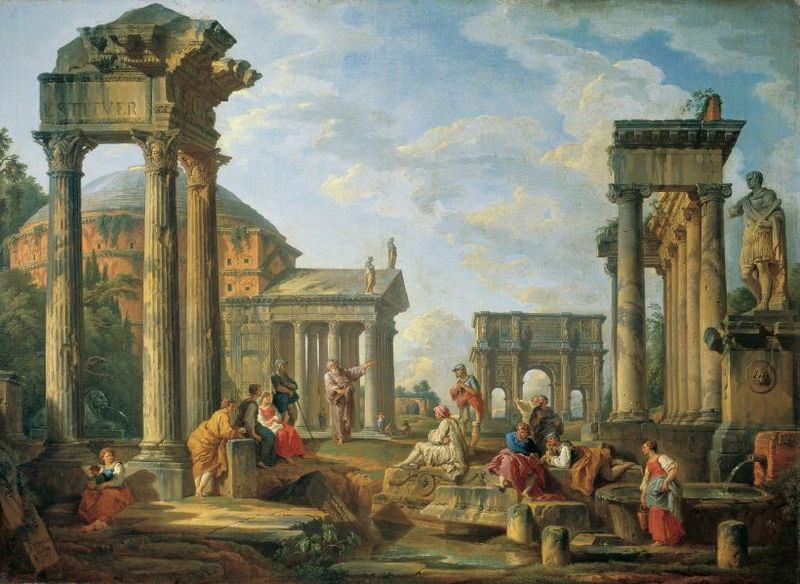

Cultural Heritage
"Our Culture, Language, History & Values are Vital to Uniting us as a Nation"
Heritage, encompasses tangible and intangible, natural and cultural, movable and immovable and documentary assets inherited from the past and transmitted to future generations by virtue of their irreplaceable value. The term ‘heritage’ has evolved considerably over time. Initially referring exclusively to the monumental remains of cultures, the concept of heritage has gradually been expanded to embrace living culture and contemporary expressions.
As a source of identity, heritage is a valuable factor for empowering local communities and enabling vulnerable groups to participate fully in social and cultural life. It can also provide time-tested solutions for conflict prevention and reconciliation.

The deliberate act of keeping cultural heritage from the present for the future is known as preservation (American English) or conservation (British English), which cultural and historical ethnic museums and cultural centers promote, though these terms may have more specific or technical meanings in the same contexts in the other dialect. Preserved heritage has become an anchor of the global tourism industry, a major contributor of economic value to local communities.
Aspects and disciplines of the preservation and conservation of tangible culture include:
Museology,
Archival science,
Conservation (cultural heritage),
Art conservation,
Archaeological conservation,
Architectural conservation,
Film preservation,
Phonograph record preservation,
Digital preservation.
Indian People forgetting their culture and they are adapting the Western culture. Adapting other culture is not bad but we should also not forget our Indian culture on which our country stands. Government can save our culture in the following ways :
Special Classes for students in school to learn about the culture of state.
State languages should be mandatory in Schools.
There should be cultural activities for students in their schools.
Government should create Heritage Museums so that people can learn about their History and their culture.
People should also celebrate cultural events in their societies, villages and their towns so that the younger generations will know about their culture
Resources :
Google Images
Wikipedia
AI :
Dialogflow Chatbot By Google
Software :
Visual Studio Code